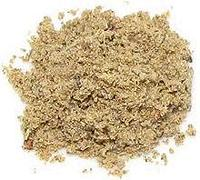

 |
Chaat MasalaIndia, Pakistan, Bangladesh - Chaat Masala | ||||
| Makes: Effort: Sched: DoAhead: |
12 T ** 20 min Yes |
The most common use for this salty, sour powder is as a garnish for fruit, salads, vegetables, fruit drinks (particularly freshly squeezed sweet lime) and snacks of all kinds. It is absolutely essential for many street vendors, who mix their own, | |||
| Chaat Masala recipes vary widely, The one here uses a very popular set of ingredients. For variations see Note-5. This recipe will fit in a 6 oz spice jar, The easiest way to use Chaat Masala for most applications is from a salt shaker. | |||||
|
----- 3 1 1/2 ----- 3 1/8 4 1/2 1/8 1/2 1/2 1/2 |
--- T T T --- T t T T t T T T |
-- Toasted Cumin seeds Coriander seeds Fennel seeds ------------- Black Salt (1) Red Chili, dry (2) Amchur powder (3) Black Pepper Asafoetida (4) Ginger powder Mint, dried Ajwain |
Make - (20 min)
|